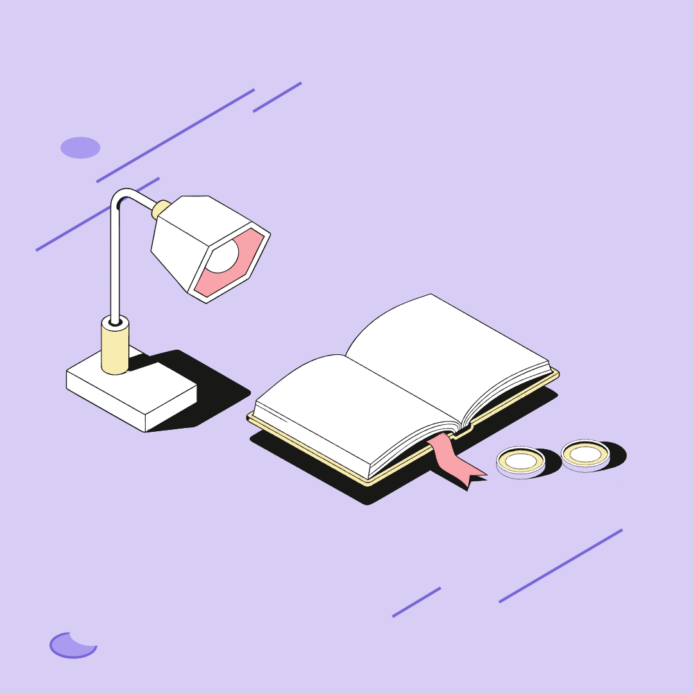

ВЕКТОРНАЯ МАСТЕРСКАЯ
Соберите свою иллюстрацию.
＋
Сцена начинается с предмета
Выберите его в библиотеке ниже
или задайте композицию слева.
Готово к работе
БИБЛИОТЕКА ИСХОДНИКОВ
Добавьте ещё одну деталь
Нажмите на предмет, чтобы добавить его на холст.
СОБРАНО АЛГОРИТМОМ
Три истории из одной библиотеки
Откройте пример и измените его под свою задачу.


КАК ЭТО УСТРОЕНО
Готовые предметы.
Новые сочетания.
Конструктор подбирает предметы по названиям или смыслу запроса. Правила помогают лампе смотреть на книгу, ручке — попадать на рабочую поверхность, а монетам — оставаться рядом.
В библиотеке 10 предметов, два уровня детализации и главные и фоновые варианты. Исходные пути, пропорции и цветовые роли сохраняются при сборке и экспорте.
Посмотреть исходники проекта ↗